1 轉系網絡：節點屬性 vs. 就業變動性
1.1 In-degree

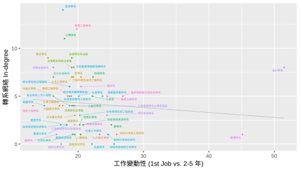
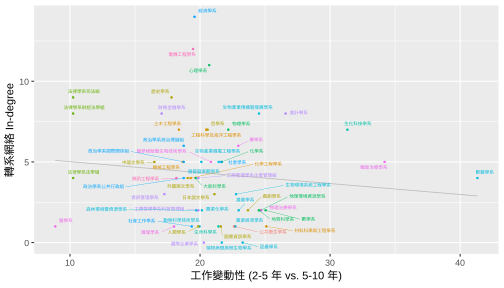
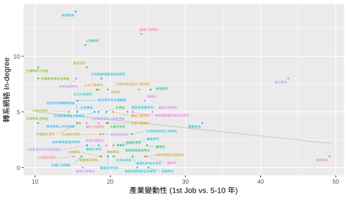
1.2 Out-degree
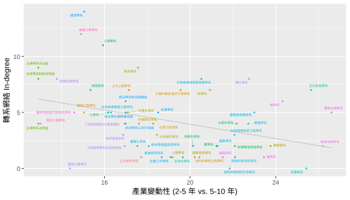
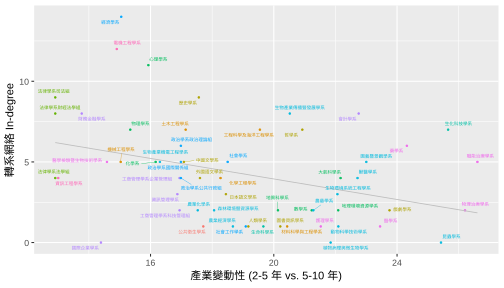
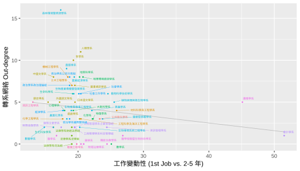
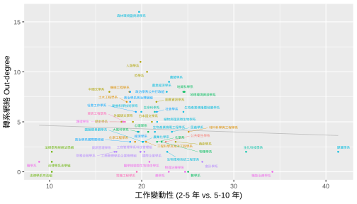
1.3 PageRank
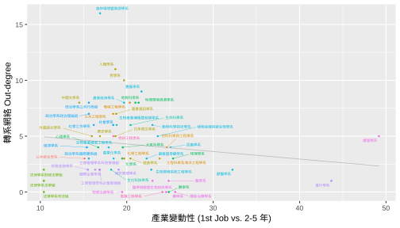
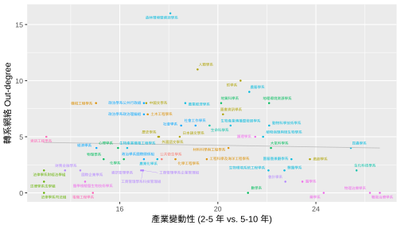

2 學測申請網絡：節點屬性 vs. 就業變動性
2.1 Degree
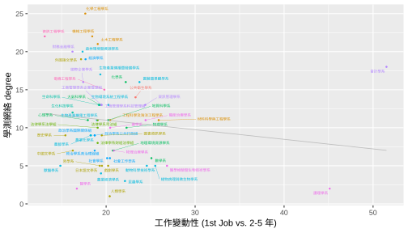
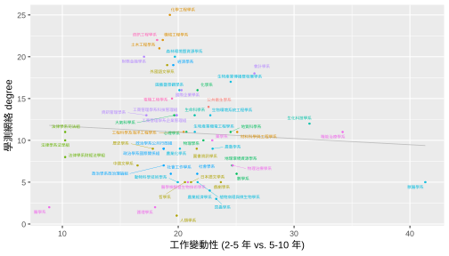
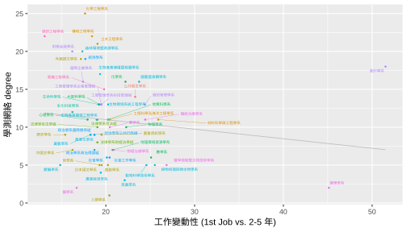
2.2 PageRank
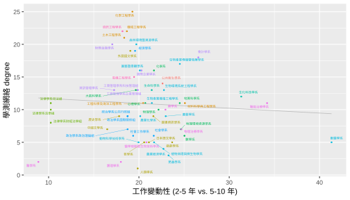
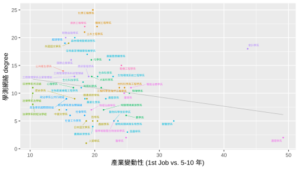
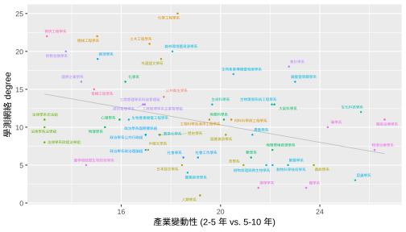
3 分群
「學測網絡」以及「轉系網絡」的分群結果，能否解釋 Centrality measures (PageRank & Degree) 與產業變動性的負相關？
3.1 轉系網絡 Centrality 與「產業變動性」之關聯
3.1.1 In-Degree

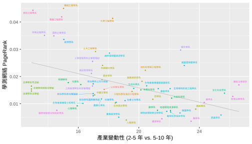
3.1.2 PageRank
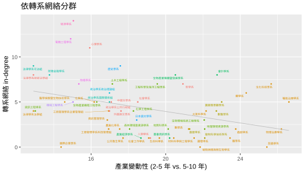
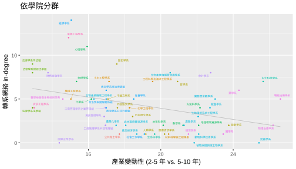
3.2 學測網絡 Centrality 與「產業變動性」之關聯
3.2.1 Degree
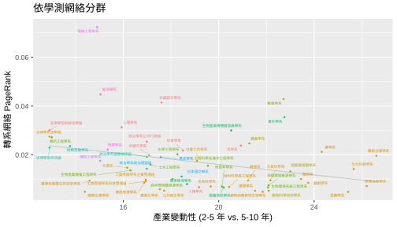
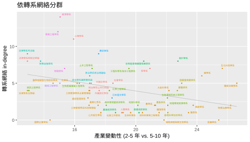
3.2.2 PageRank
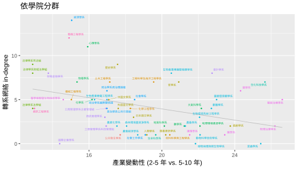
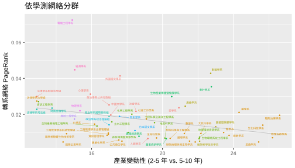
3.3 兩網絡之相關
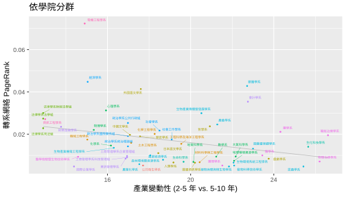
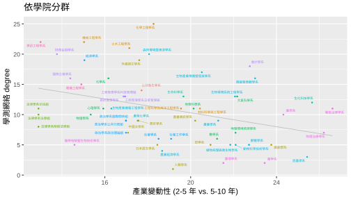